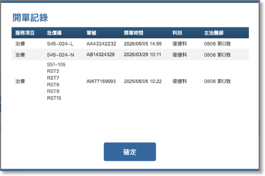

02-2-2 醫生開單記錄

項目

內容

說明
開單記錄說明
1. 將同一任務中結案前多次開單的資料收納在一起，排列順序由開單時間排列到舊。
2. 門診記錄來源分為2種：
- 治療師透過"02-2-3 結案及預排”或”03-1-2-1-2 新增/編輯預約儀器資訊”登記的記錄
- 顯示預約的服務項目。
- 單號顯示預排的治療師姓名。
- 開單時間顯示填寫預排單的時間。
- 系統撈取HIS開單資料
- 預約到結案之間開立相同就類型的單據記錄。
- 完整呈現單據中的批價項目。
3. 住院記錄也分為2種：
- 當次住院期間，治療師透過”03-1-2-1-2 新增/編輯預約儀器資訊”登記的記錄。
- 系統撈取當次住院期間的HIS開單資料。
服務項目

顯示批價碼對應的主服務項目：
- 治療
- 評估
- 檢查
- MBS
- FEES
1. 治療
- S45-024-L
- S45-024-N
- S51-105
- S51-112
- S51-103
- S51-104
2. 評估
- S51-107
- S45-024-L + S48-151-N + S51-107
- S45-024-N + S48-151-N + S51-107
- S45-024-N + S51-107
3. 檢查
- S48-151
- S48-151-N
4. MBS
- S48-M05 + X75-980
5. FEES
- S48-M02

批價碼


除了主服務項目外的細項碼都要顯示，例如RST2

單號
醫囑單號碼或收件號待與治療師確認

開單時間

yyyy/mm/dd hh:mm

開立服務項目的時間
開單科別 / 主治科別

依HIS資料呈現
開單醫師 / 主治醫師
顯示開單醫師姓名及開單當下住院的主治醫師
